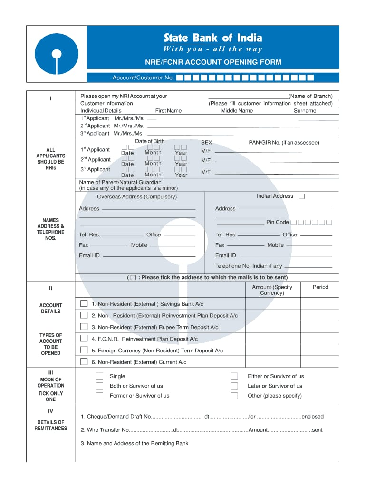
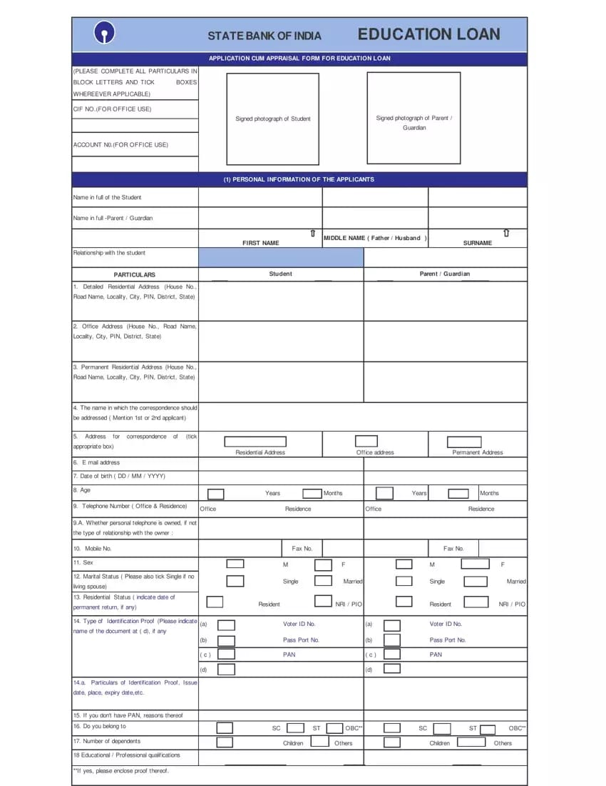
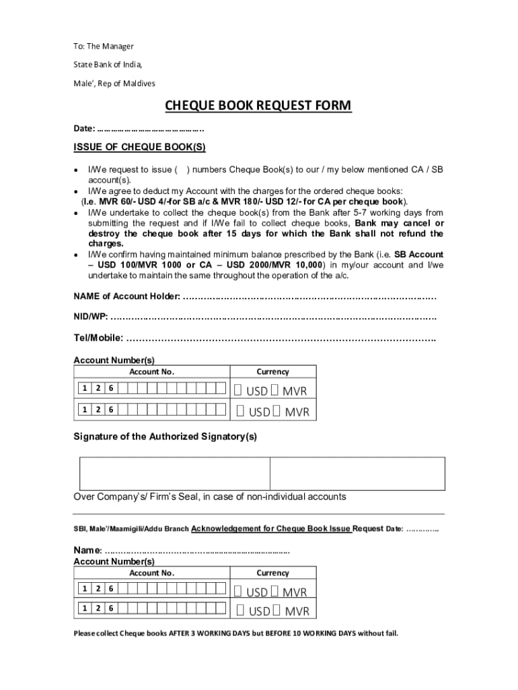
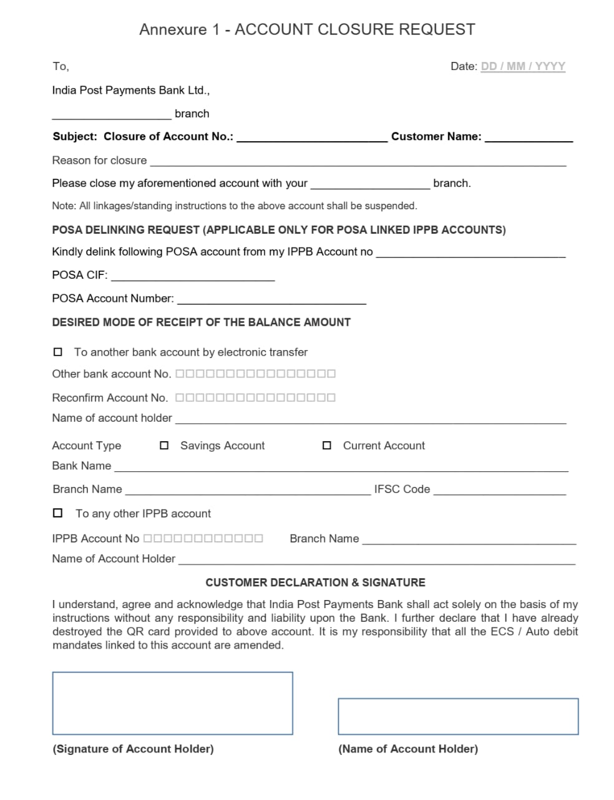
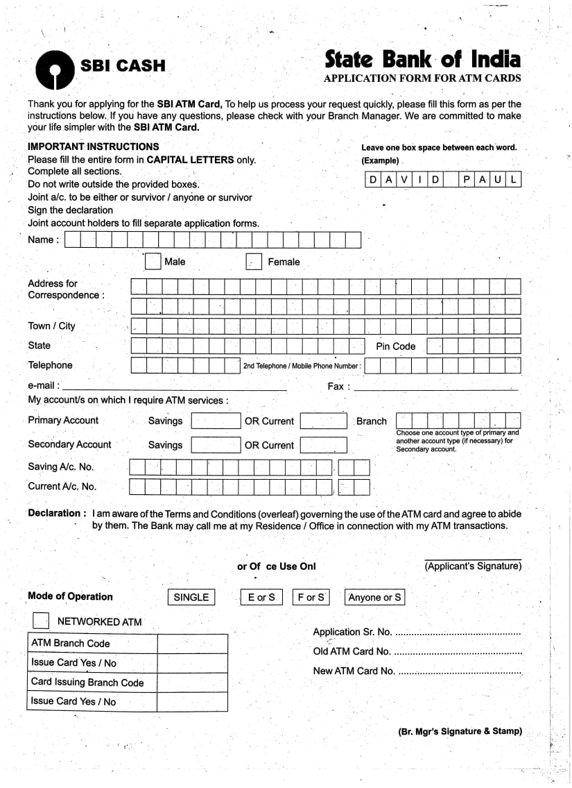

Select the form you need to fill out. Click the "Explain" button to hear a detailed voice
explanation of the form's purpose and how to complete it.
Available Forms:
1. Account Opening Form – Open a new savings or current account.
2. Loan Application Form – Apply for a personal, home, or vehicle loan.
3. Cheque Book Request Form – Order a new cheque book.
4. Savings Account Closure Form-To close the savings account.
5. ATM/Debit Card Request Form – Request a new or replacement debit card.
Account Opening Form
Loan Application Form
Cheque Book Request Form
Savings Account Closure Form
ATM Card Application Form
